DE DM FER
DE DM FER
Antes de tirar iniciativa
Toda aventura empieza antes de la primera tirada.
La mía comenzó mucho antes de saber que algún día habría una pantalla frente a mí.
Tuve mis primeros acercamientos al rol en 2018. Durante los años siguientes aparecieron partidas aquí y allá, personajes, dados y pequeñas historias que todavía no sabía que terminarían convirtiéndose en algo importante. Pero fue en marzo de 2026 cuando decidí entrar de lleno en este mundo.
Y caí de cabeza.

Descubrí que detrás de una mesa cabían muchas de las cosas que siempre me habían apasionado: actuar, improvisar, escribir, diseñar, construir cosas con las manos, utilizar tecnología, hacer voces ridículas, poner música para provocar exactamente la emoción correcta y, sobre todo, contar historias con otras personas.
Porque pronto entendí algo:
yo no quería contar historias para mis jugadores.
Quería contar historias con ellos.
Me identifico con los bardos por una razón.
No porque espere resolver cada problema cantándole a un dragón —aunque no descarto la posibilidad—, sino porque entiendo la narración como un intercambio. Alguien me entrega una idea, una emoción, una decisión inesperada, una pequeña parte de su personaje… y yo intento escucharla, transformarla y devolverle algo que haga que quiera seguir jugando.
Me encantan las caras de sorpresa.
Los momentos de confusión.
Las carcajadas después de que hago el ridículo interpretando a un NPC.
Ese segundo maravilloso en que todos se quedan callados después de una revelación.
Pero también me gustan los momentos pequeños: cuando alguien que casi no hablaba empieza a participar, cuando los jugadores continúan discutiendo la historia después de terminar la sesión, cuando dibujan a sus personajes, escriben sobre ellos o comienzan a hablar de esas personas imaginarias como si hubieran vivido algo juntos.
Ahí es donde ocurre la verdadera magia.
No llevo décadas detrás de una pantalla.
Estoy comenzando mi camino como Dungeon Master y todavía tengo muchísimo que aprender. Pero no llegué a él con las manos vacías.
Llegué con actuación e improvisación.
Con oratoria y docencia.
Con tecnología y gestión de grupos.
Con pintura, modelismo, cosplay, props y mundos que quiero construir hasta poder ponerlos físicamente sobre una mesa.
Llegué con una cantidad probablemente poco razonable de entusiasmo.
Y con una idea muy clara de qué clase de narradora quiero llegar a ser.
Quiero preparar raíces fuertes, pero dejar que mis jugadores decidan hacia dónde crecen las ramas.
Quiero historias capaces de ser oscuras sin ser crueles, divertidas sin perder profundidad y emocionantes sin olvidar que detrás de cada personaje existe una persona.
Quiero que nadie se sienta solo en mi mesa.
Quiero que incluso quien llegue sin saber qué dado debe tirar pueda encontrar un lugar en la aventura.
Y, por encima de todo, tengo una condición de victoria bastante sencilla.
Cuando guardemos los dados, cerremos las hojas y termine la sesión, quiero mirar a las personas que estuvieron conmigo y hacerme una pregunta:
¿Se van un poquito mejor de como llegaron?
Si se llevan una historia que quieren seguir contando, una carcajada, una emoción inesperada, un personaje al que ahora quieren un poquito más o simplemente unas horas en las que pudieron escapar de la realidad para convertirse en los héroes que quisieran ser…
entonces para mí la partida salió bien.
Este libro cuenta cómo estoy aprendiendo a conseguirlo.
Hay vampiros enamorados, nutrias con problemas políticos, goblins peligrosamente bien conectados, miniaturas, mundos nacidos de raíces, música, tecnología, orejas de gato y una cantidad alarmante de dados.
Pero, sobre todo, hay personas.
Así que…
bienvenidos a mi mesa.
Yo soy DM Fer.
Barda por elección.
Dungeon Master por absoluta obsesión.
Y esta aventura apenas está comenzando.
La barda detrás de la pantalla
Antes de aprender a dirigir una partida, yo ya había aprendido a pararme frente a otras personas y contar algo.
Había estudiado actuación en la Academia Artaud. Había pasado por Toastmasters, aprendido sobre oratoria y descubierto que improvisar podía ser mucho más que salir de un apuro; en 2022 incluso obtuve un primer lugar estatal de improvisación en Puebla. También había sido docente, incluso frente a grupos de primaria, y profesionalmente había aprendido sobre gestión de proyectos, comunicación y resolución de conflictos.
Por mucho tiempo todas esas habilidades parecieron vivir en habitaciones distintas.

Hasta que me senté detrás de una pantalla de DM.
Entonces entendí que eran partes de la misma barda.
Interpretar un NPC requiere actuación. Describir una escena requiere saber contarla. Mantener la atención de una mesa requiere comunicación. Resolver un conflicto requiere diplomacia. Y cuando un jugador destruye en treinta segundos aquello que preparaste durante tres horas… bueno, ahí sirve bastante saber improvisar.
Pero la habilidad que más me importa no es hablar.
Es escuchar.
Para mí, rolear bien significa tomar aquello que mis jugadores o compañeros me ofrecen, reaccionar genuinamente y devolverles algo que también les provoque una emoción.
No quiero solamente contarles mi historia.
Quiero descubrir qué historia podemos provocar entre todos.
Raíces firmes, ramas impredecibles
Preparo mucho.
Muchísimo.
Necesito saber por qué existe un lugar, quién vive ahí, qué ocurrió antes de que llegaran los personajes, qué quiere cada NPC y qué consecuencias tendría mover una pieza.
Pero no preparo una carretera.
Preparo un árbol.
Construyo las raíces: la historia, las reglas del mundo, sus conflictos y su coherencia.
Planto un tronco: la idea central que pone la aventura en movimiento.
Y entonces llegan los jugadores.

A partir de ahí, las ramas son suyas.
Si algo despierta su curiosidad, intento alimentarlo. Si un personaje secundario que esperaba utilizar durante cinco minutos termina fascinándolos, quiero saber qué hay detrás de él. Si ignoran la puerta gigantesca que preparé y deciden investigar una ventana sospechosa, quizá resulte que aquella ventana siempre tuvo algo interesante.
Y cuando hacen algo completamente inesperado, normalmente mi primera reacción es reírme.
Después me adapto.
Y luego intento devolverles algo todavía más inesperado.
Porque una de las pocas cosas que puedo prometer como DM es que siempre habrá algo que no estaba en el plan.
Y probablemente de ahí salga un roleo increíble.
Cuando cayó Nuncanoche
Mi primera gran historia detrás de la pantalla se llama Nuncanoche.
Es una campaña virtual semanal de D&D 5e 2024 homebrew, de dark fantasy, donde he podido explorar algunas de las cosas que más me atraen como narradora: el neogótico, la fantasía oscura, el terror psicológico, el misterio y la belleza de las historias que parecen una cosa hasta que uno se acerca demasiado.
Sus influencias son deliberadamente extrañas entre sí.

Hay ecos del dramatismo vampírico y oscuro de Hellsing, pero también de la fantasía maravillosa de The NeverEnding Story y de algo que aprendí de My Little Pony: Friendship is Magic: que una historia fantástica puede hablar de vínculos, empatía y amistad sin que eso le quite profundidad.
Nuncanoche lleva ocho sesiones narradas más su Sesión Cero, normalmente de cuatro a cinco horas.
Ahí descubrí cuánto disfruto observar las caras de mis jugadores.
La sorpresa.
La confusión.
La empatía.
La risa.
Ese maravilloso silencio después de revelar algo importante.
Me encanta hacer el ridículo interpretando un personaje absurdo y, media hora después, cambiar completamente el tono y dejar una frase que haga que todos sospechen que algo horrible está por ocurrir.
Porque oscuridad no significa ausencia de ternura.
Y misterio no significa ausencia de humor.
La muchacha y el vampiro
En Nuncanoche desapareció una muchacha.
Las pistas conducían hacia el castillo de un vampiro.
La estructura parecía conocida: alguien había desaparecido, había un monstruo y, naturalmente, los héroes tendrían que rescatarla.
Solo había un pequeño inconveniente.
Ella iba voluntariamente.
El vampiro necesitaba alimentarse y ella había comenzado a enamorarse de él.
De pronto, el problema dejó de ser simplemente encontrar al monstruo.
¿Qué significa rescatar a alguien que no quiere ser rescatado?

¿Hasta dónde llega la preocupación de los héroes y dónde comienza la autonomía de la persona que intentan proteger?
Ese es el tipo de conflicto que disfruto.
No necesito que todos mis antagonistas sean secretamente buenos ni que cada situación tenga un giro espectacular.
Pero sí me gusta dejar una espina.
Algo que obligue a detenerse un segundo antes de levantar la espada.

Entonces crecieron las raíces
Después llegó Rootcrest.
Y Rootcrest no comenzó solamente como una aventura.
Comenzó a convertirse en un mundo.
Llevo aproximadamente un mes trabajando en su construcción, desarrollando una dirección e identidad propias: territorios, conflictos, criaturas, personajes, estética, materiales y una fantasía donde naturaleza y elementos magindustriales pueden convivir.
De ahí nacieron Las Crónicas de Rootcrest, mis one-shots presenciales.
Actualmente participo en D&D Academy en The Pub Game Store Cholula, donde narro aventuras orientadas especialmente a personas que quieren acercarse por primera vez al rol, incluyendo novatos y niños.
Rootcrest necesitaba ser distinto a Nuncanoche.
Menos opresivo. Más luminoso. Más aventurero.
Pero no menos profundo.
Porque una historia amigable no tiene por qué ser una historia vacía.
Y aparentemente una nutria adorable puede iniciar un problema político perfectamente serio.
Las nutrias declararon la guerra
Bueno.
Quizá técnicamente las nutrias no declararon la guerra.
Pero pregúntales a ellas y probablemente te cuenten otra versión.
En una de las historias de Rootcrest, un grupo de nutrias está harto de los cocodrilos que las molestan. Sobre la superficie, es una premisa sencilla, simpática y suficientemente clara para jugadores nuevos.
Nutrias buenas.
Cocodrilos malos.
Vamos a resolverlo.

Excepto que me interesa preguntar qué pasa cuando uno escucha al cocodrilo.
¿Qué necesita?
¿Qué ocurrió antes?
¿Quién está ocupando qué espacio?
¿Existe algo río arriba que ninguno de los dos grupos comprende todavía?
Me gusta esconder conflictos más complejos debajo de ideas accesibles.
No para engañar a mis jugadores, sino para permitirles decidir hasta dónde quieren profundizar.
Si quieren una aventura divertida ayudando nutrias, funciona.
Si empiezan a hacer preguntas...
Bueno.
Yo ya preparé las raíces.
Los primeros aventureros
Una de mis partes favoritas de narrar no es dirigir a jugadores experimentados.
Es ver a alguien descubrir por primera vez que puede hacer lo que se le ocurra.
He introducido al rol a mis papás, mis suegros, mi cuñada y cuatro amigos de la universidad.
Y he aprendido que explicar D&D a una persona nueva no consiste en aventarle un manual y esperar lo mejor.
Consiste en encontrar la puerta adecuada.
Mi experiencia como docente —incluyendo primaria— me ayuda mucho aquí.
No todos aprenden igual. No todos necesitan saber todas las reglas antes de comenzar. A veces basta con preguntar:

¿Qué quieres intentar?
Yo te digo qué necesitas tirar.
En D&D Academy busco precisamente eso: una experiencia amigable para novatos, niños y cualquier persona que tenga curiosidad pero quizá también un poquito de miedo de “hacerlo mal”.
Porque para empezar a jugar rol no necesitas memorizar un libro.
Necesitas permiso para imaginar.
Nadie se queda atrás
Hay una regla que para mí está por encima de muchas reglas impresas:
nadie debería sentirse solo en mi mesa.
Todos forman parte del equipo.
Eso no significa obligar a la persona reservada a interpretar un monólogo frente a todos.
A veces incluir a alguien significa algo mucho más pequeño.
Un NPC que decide sentarse a su lado.
Una criatura que se encariña con su personaje.
Una pregunta dirigida específicamente hacia él cuando veo una oportunidad.
Un momento diseñado para decirle, sin decirlo:
También hay un lugar para ti aquí.

Quiero que todos interactúen y tengan oportunidades de importar.
No necesito que todos ocupen la misma cantidad de espacio de la misma manera.
Necesito que sepan que pertenecen a la misma aventura.
Las reglas que no necesitan dados
Me gusta el dark fantasy.
Me gusta el terror psicológico.
Me gustan los conflictos intensos.
Pero intensidad y crueldad no son sinónimos.
Hay temas que no quiero utilizar gratuitamente en mis mesas, particularmente crueldad excesiva, violencia sexual, abuso infantil y situaciones construidas alrededor de traumas extremadamente fuertes.
Y la X-Card me parece fundamental.
Si alguien realmente está incómodo, paro.
No necesito que defienda su incomodidad frente a un tribunal de aventureros.
Primero está la persona.

Después vemos qué hacemos con la escena.
Porque ningún giro argumental es tan brillante que valga más que la seguridad de alguien sentado conmigo.
La historia se puede reescribir.
La confianza cuesta bastante más recuperarla.

Cuando la muerte tira iniciativa
Tampoco me interesa que la muerte de un personaje sea únicamente:
“Fallaste. Se acabó.”
Me gustan las consecuencias.
Pero también me importa recordar que detrás del personaje hay alguien que quizá lleva meses queriéndolo, dibujándolo, escribiéndole historias y convirtiéndolo en una pequeña extensión de sí mismo.
Por eso me interesan alternativas inspiradas en herramientas narrativas como las de Daggerheart.
Tres caminos.
Aceptar la muerte.
Echarlo a la suerte.
Un Blaze of Glory.
Volver como un renacido bajo alguna condición.
Encontrar una consecuencia diferente.
Y si mi jugador verdaderamente no quiere perder a ese personaje, podemos hablarlo.
No quiero utilizar la muerte como amenaza contra mis jugadores.
Quiero utilizar las consecuencias para construir historias con ellos.
El arte ancestral de decir «aguántate tantito»
En una mesa hay otra criatura extremadamente peligrosa.
El jugador emocionado.
Lo adoro.
Yo también soy esa persona.
Pero si una voz ocupa toda la habitación, las demás desaparecen.
Cuando alguien monopoliza demasiado la mesa, primero intento redistribuir naturalmente la atención: pedir una iniciativa pasiva de participación, cambiar el foco, preguntarle directamente a otro personaje qué está haciendo.
Y si nada funciona...
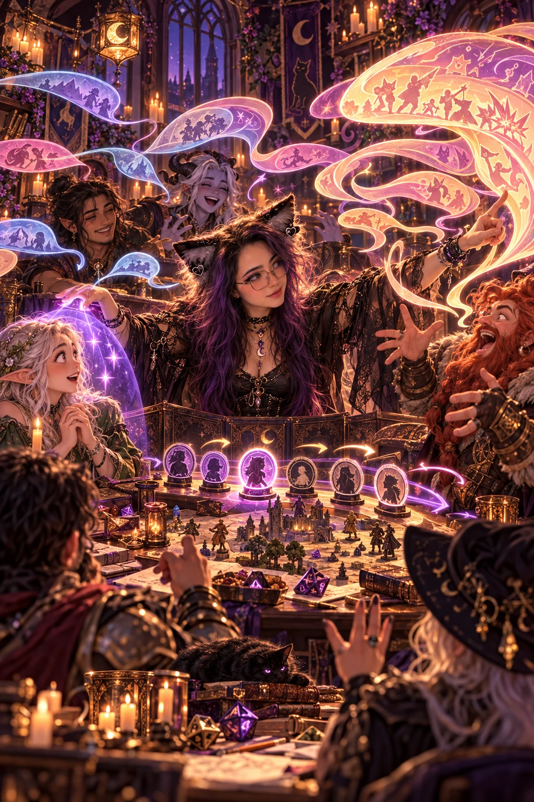
Pues toca el equivalente diplomático de:
Nel, wey. Aguántate tantito.
Mi experiencia como Scrum Master, docente y en resolución de conflictos me ha enseñado que poner límites no requiere humillar a nadie.
El objetivo no es hacer callar al jugador entusiasta.
Es recordar que estamos construyendo una historia de varias voces.
Cuando los héroes quieren golpearse entre ellos
Permito conflictos entre personajes.
Pero no confundo conflicto entre personajes con conflicto entre jugadores.
Si alguien quiere robarle, engañar, atacar o realizar una tirada directamente contra otro personaje, necesito consentimiento.
Si ambos quieren jugar esa escena, adelante.
En mi mesa, además, las tiradas directamente enfrentadas entre jugadores se realizan con desventaja como convención.
Si una de las personas no quiere participar, no voy a presionarla.
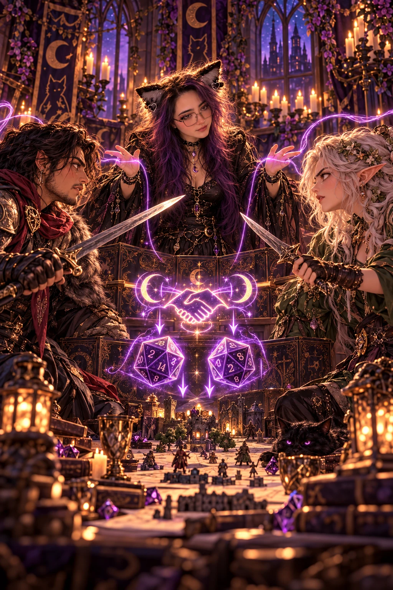
El drama es maravilloso cuando todos decidimos jugar con fuego.
Es bastante menos divertido cuando alguien descubre que lo metieron al incendio sin preguntarle.
El Krnal
Y entonces existe El Krnal.
El Krnal es un goblin.
Es informante.
Es ñero.
Es probablemente el ñero más ñero que alguna vez haya tenido acceso a información sensible en un mundo de fantasía.
Tiene dichos populares, una seguridad completamente desproporcionada y una red de informantes llamada los CholoEscuncles.
Su filosofía podría resumirse aproximadamente como:
tu barrio te respalda.
El Krnal existe porque adoro interpretar.
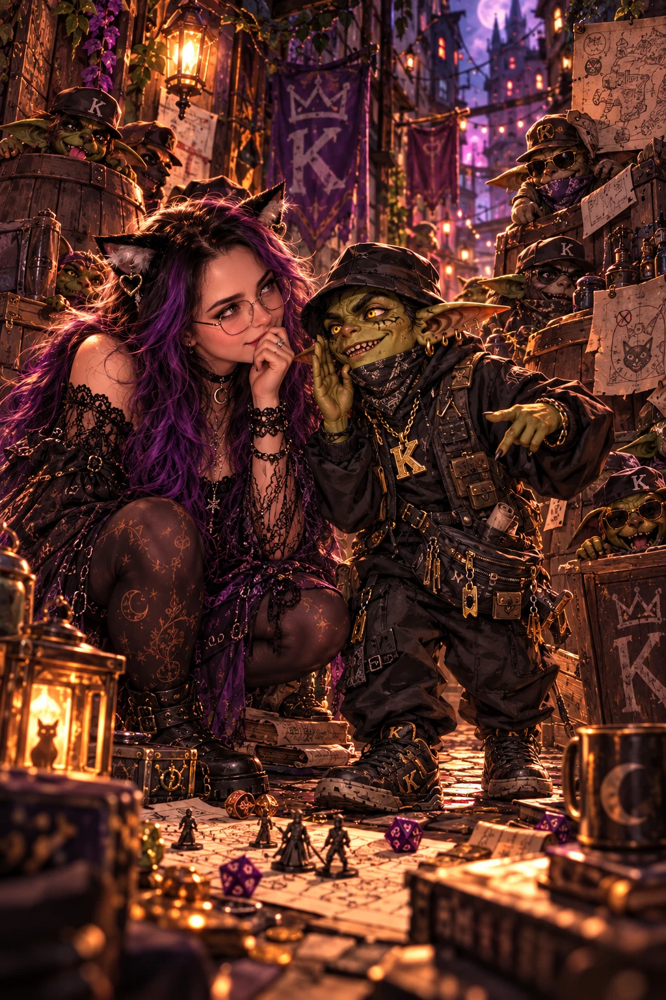
Me encanta cambiar el tono, hacer voces, improvisar tonterías y estar dispuesta a hacer el ridículo frente a mis jugadores si eso provoca una reacción.
Pero no quiero depender únicamente de comedia vulgar o del NPC típico.
Incluso un personaje absurdo puede tener información importante, relaciones, competencias y una razón para existir.
El Krnal podrá ser un desastre.
Pero conoce su barrio.
Respeta al Krnal.
Probablemente él ya sabe dónde vives.
La barda también juega
Los lunes cambio de asiento.
Desde hace aproximadamente cinco meses participo regularmente como jugadora en una mesa online de Daggerheart, con sesiones de aproximadamente cinco a seis horas.
Y me encanta.
Estar del otro lado de la pantalla me recuerda qué se siente esperar una revelación, encariñarse con una decisión, reaccionar a lo que otro narrador preparó y entregar elementos para que alguien más juegue con ellos.
También me ha despertado muchísimo interés en aprender a narrar Daggerheart.
No quiero decir que lo domino como GM porque todavía no es cierto.
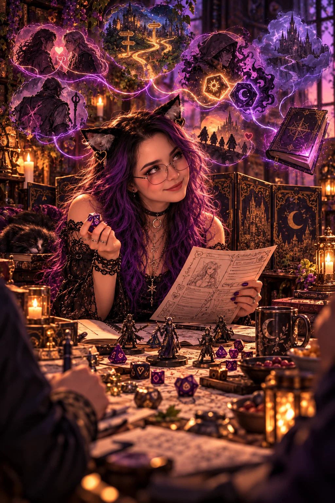
Quiero aprenderlo.
Observarlo.
Jugarlo.
Entender por qué funcionan sus herramientas narrativas.
Ser jugadora también me enseña a ser mejor narradora.
Porque para dirigir historias compartidas conviene recordar cómo se siente entregar tu personaje a una historia que no controlas.
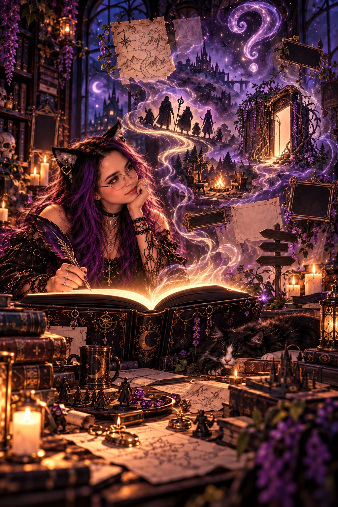
La tercera historia todavía no tiene nombre
También tengo una mesa quincenal de D&D 5e 2024 homebrew.
Todavía no tiene nombre.
Y eso me gusta.
Por ahora solo hemos realizado la Sesión Cero.
Todavía no existe una gran epopeya que pueda presumir.
Existen posibilidades.
Personajes que apenas comienzan a conocerse.
Caminos que todavía no hemos elegido.
Preguntas que ni siquiera sabemos que tendremos que responder.
No quiero fingir experiencia donde todavía no existe.
Una campaña recién nacida merece poder decir:
Apenas estamos empezando.
Porque también hay algo hermoso en una página en blanco.
La artesana
A veces contar la historia no me basta.
Quiero tocarla.
Tengo un emprendimiento llamado Mageek, dedicado a impresión de miniaturas y figuras de resina pintadas a mano.
Trabajo con impresión en resina, pintura, modelismo, creación de props, resina epóxica, manualidades, papel maché y materiales reciclados.
También disfruto el cosplay y el prop making.
Siempre que puedo, prefiero fabricar mis propios elementos antes que comprarlos.
Diseño minis.
Pinto piezas.
Hago mapas.
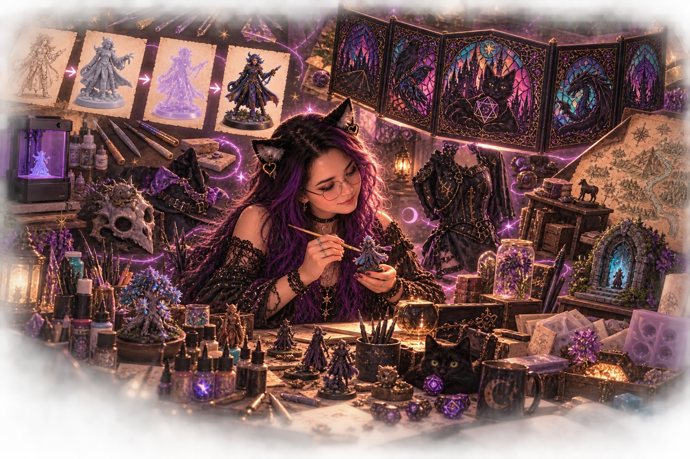
Creo props.
Construí y personalicé mi propia pantalla de DM.
Hasta mis dados y materiales terminan convirtiéndose en parte del lenguaje visual de mis mesas.
No creo que una partida necesite props para ser buena.
Pero si puedo poner en las manos de un jugador algo que hasta hace unos días solo existía en nuestra imaginación...
¿Por qué no hacerlo?
La magia que se escucha
Soy una persona profundamente musical.
Para mí, el sonido y la ambientación no son decoración.
Son narrativa.
Una canción puede hacer que una habitación segura deje de sentirse segura antes de que yo diga una palabra.
El silencio puede ser más amenazante que cualquier soundtrack.
Un objeto físico puede hacer que una pista deje de ser información y se convierta en algo que el jugador realmente sostiene.
Por eso me interesan la música, los props, la ambientación visual, el vestuario y cualquier recurso que ayude a la inmersión.
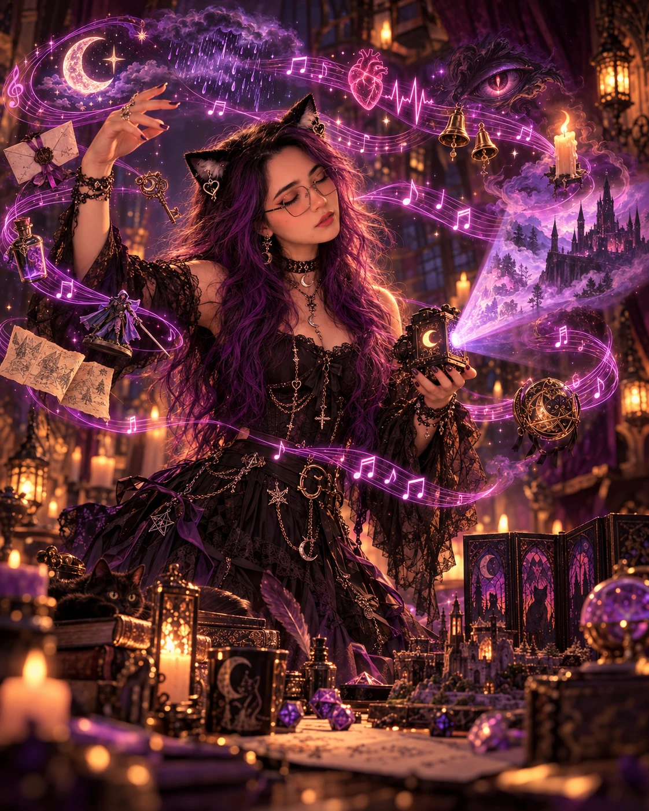
Incluso cuento con un pequeño proyector cuando una experiencia puede beneficiarse de ello.
Pero intento seguir una regla:
calidad sobre cantidad.
No quiero llenar la mesa de cosas solo porque puedo.
Quiero que aquello que aparece tenga una razón para estar ahí.
La hechicera tecnológica que técnicamente es barda
Soy ingeniera de software.
Así que, inevitablemente, cuando encuentro una herramienta tecnológica nueva mi cerebro pregunta:
“¿Y esto cómo lo metemos a una partida?”
Trabajo o tengo experiencia con herramientas como Discord, Dungeon Alchemist, Picrew, Canva, Photoshop, Inkscape, Blender, ChatGPT, Claude, CapCut, Unity y realidad virtual mediante VRChat, entre otras.
Incluso he utilizado herramientas poco convencionales, como The Sims, cuando necesito visualizar espacios o relaciones.
La tecnología para mí no sustituye la creatividad.
La amplifica.
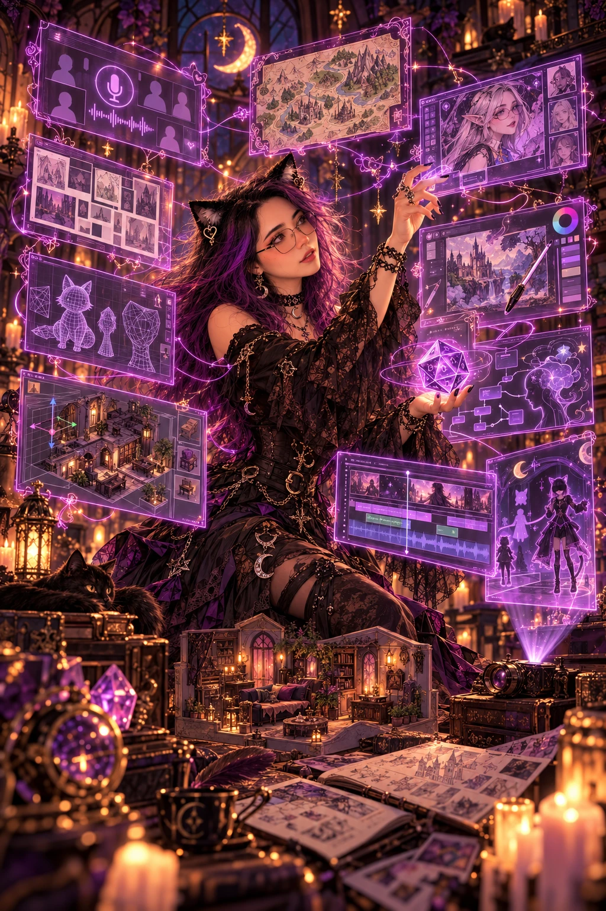
Puede ayudarme a diseñar un mapa, visualizar una escena, preparar un personaje, editar un video, modelar una miniatura o comunicar una idea que todavía no puedo fabricar físicamente.
Supongo que eso me convierte en una especie de tecnomante.
Aunque insisto:
soy barda.
Las orejas de gato
Sí.
Las orejas se quedan.
Me gusta el cosplay, el prop making, la moda alternativa y construir una identidad visual alrededor de mi forma de narrar.
Cuando dirijo busco que mi vestuario tenga algo de mí: oscuro, fantástico, ligeramente teatral, con mis orejitas de gato como elemento recurrente.
No necesito convertirme literalmente en un personaje.
Pero sí me gusta que desde antes de comenzar la sesión exista una pequeña señal de que estamos a punto de entrar a otro espacio.
La inmersión también puede comenzar con quien está detrás de la pantalla.
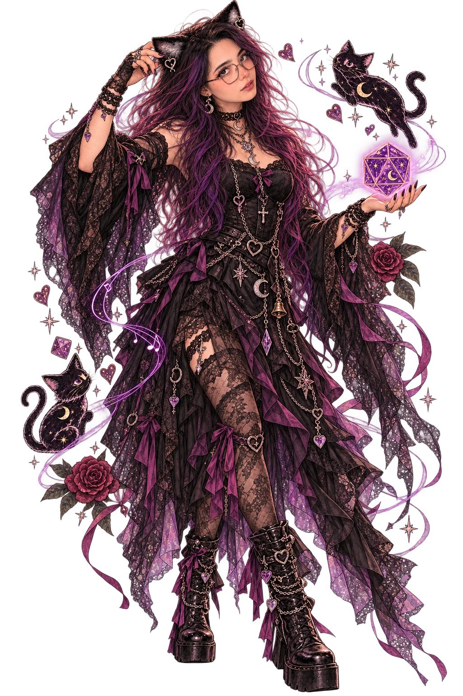
Además, después de suficiente tiempo usando orejas de gato como DM, quitarlas probablemente provocaría una penalización de Carisma.
No pienso comprobarlo.
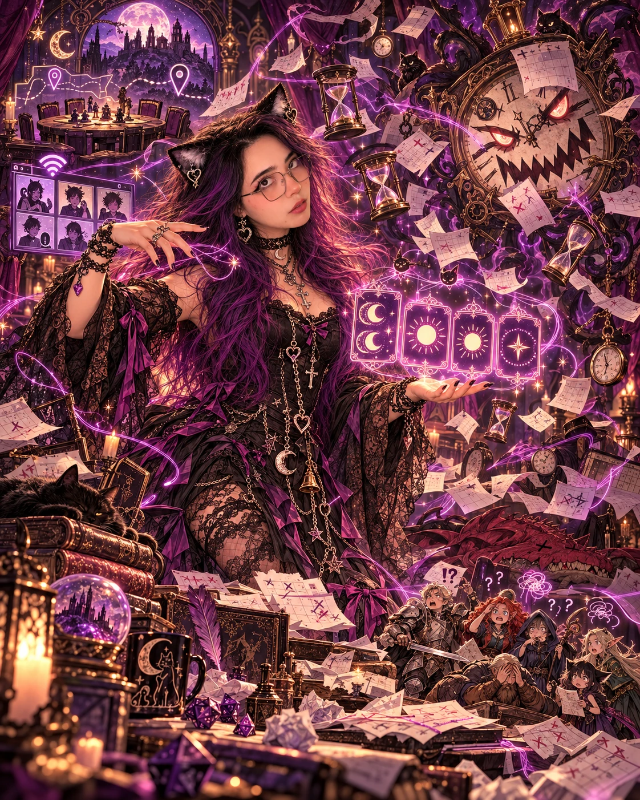
El verdadero tesoro eran los horarios que coordinamos por el camino
Todo gran grupo de aventureros termina enfrentándose al enemigo definitivo:
coordinar agendas de adultos.
Mi disponibilidad habitual contempla jueves cada quince días, sábados y domingos con planeación previa y martes cuando las actividades lo permiten.
Para mesas presenciales puedo moverme principalmente por Cholula y Zavaleta.
Me siento especialmente cómoda con grupos de alrededor de cinco a seis jugadores, aunque puedo adaptarme a mesas más pequeñas.
Y si por alguna razón soy yo quien necesita cancelar o modificar una sesión, considero importante avisar con anticipación, proponer soluciones o alternativas y buscar compensar el inconveniente.
Los dragones son ficción.
El tiempo de las personas no.
Cuarenta horas y contando
No llevo veinte años narrando.
Y no quiero fingir que sí.
Comencé a participar activamente en el mundo del rol en marzo de 2026, aunque mis primeros acercamientos ocurrieron desde 2018 y tuve experiencias recurrentes durante los años siguientes.
Como DM, Nuncanoche suma ocho sesiones más su Sesión Cero, con sesiones de aproximadamente cuatro a cinco horas.
A ello se añade mi experiencia presencial narrando Rootcrest y el inicio de mi nueva mesa quincenal.
Eso coloca mi experiencia efectiva de narración por encima de las cuarenta horas, y sigue creciendo.
Soy una narradora relativamente nueva.
Pero no llegué vacía.
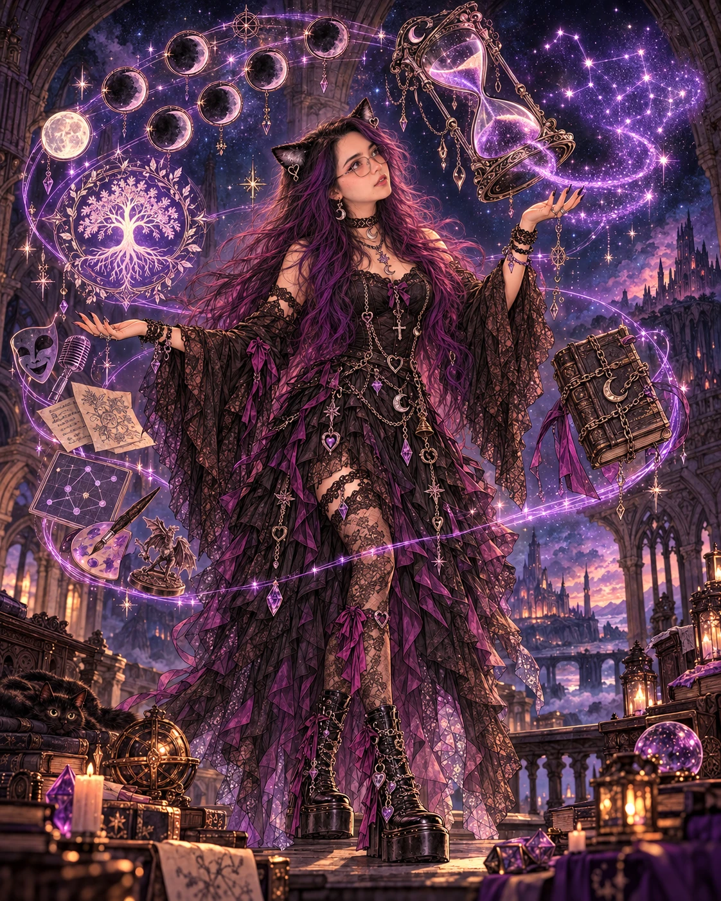
Llegué con actuación.
Improvisación.
Oratoria.
Docencia.
Tecnología.
Gestión de grupos.
Resolución de conflictos.
Artesanía.
Música.
Y una cantidad ligeramente preocupante de entusiasmo.
No presento esas cuarenta horas como la meta.
Las presento como evidencia de que ya empecé a caminar.
La Mazmorra
Quiero formar parte de Mazmorra de Masters porque esta comunidad nos recibió de una manera maravillosa.
Nos abrió las puertas a un mundo nuevo lleno de magia.
Y quiero seguir aprendiendo.
Quiero conocer otras formas de narrar, otros sistemas, otras mesas y otros narradores.
Quiero aportar lo que ya sé y reconocer con tranquilidad todo lo que todavía me falta aprender.
Puedo ofrecer mesas para público interesado en iniciarse, incluidos novatos y niños; puedo trabajar con jugadores experimentados y también con quien llega preguntando cuál de todos esos dados es el D20.
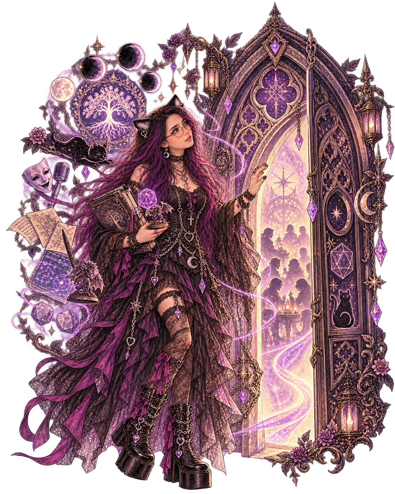
Puedo ofrecer interpretación, improvisación, worldbuilding, ambientación, tecnología, props, materiales hechos a mano y, sobre todo, disposición para escuchar.
Porque no quiero entrar a una comunidad de narradores para demostrar que ya terminé de aprender.
Quiero entrar precisamente porque no he terminado.
Y porque alguien abrió esa puerta para mí.
Quizá algún día pueda sostenerla para la siguiente persona.